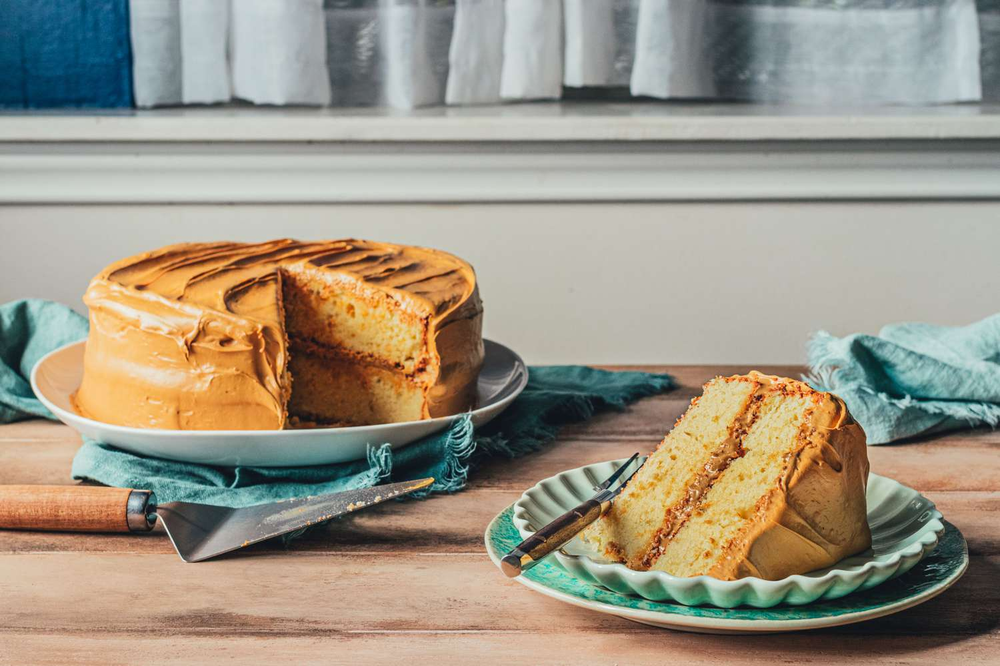

Caramel cake is a traditional American layer cake with southern roots. Layers of soft and buttery yellow sponge cake are stacked on each other with sweet caramel icing or frosting slathered in between them and all over the cake. What makes this southern classic special is not the cake itself, but the caramel frosting which is quite tricky to prepare and requires practice.
Meal prep time : 1 hour
Servings : 12-14